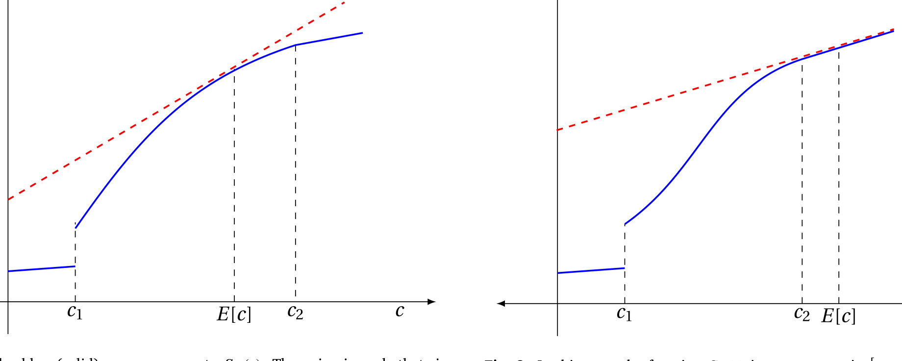
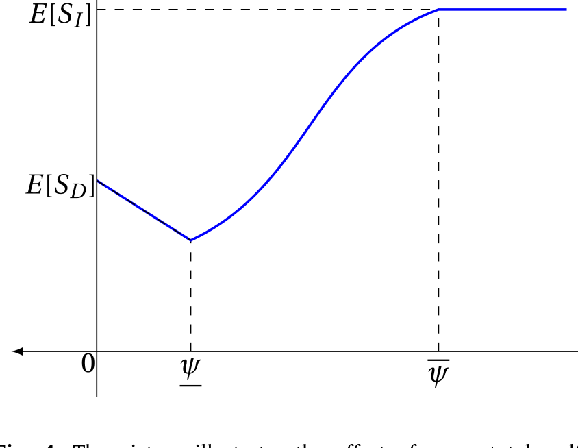
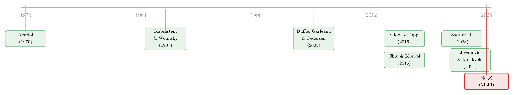

承诺去交易：为什么「先卖给中间商」反而能治好柠檬市场
本文读的是 Sannino (2026, Journal of Financial Economics)：在一个被逆向选择困扰的「柠檬市场」里，如果卖家先把资产卖给中间商、再由中间商转手给最终买家，卖家整体上反而更好——哪怕中间商既没有信息优势、也没有任何特殊技能。原因在于「先卖给中间商」相当于让卖家在看到需求冲击之前就承诺好了交易决策，这恰恰削弱了逆向选择。更反直觉的是：当中间靠克服搜寻摩擦而存在时，搜寻摩擦越严重，社会总福利越高。
1 一桩旧车买卖里的悬念
先讲一个论文开篇就摆出来的场景。
你正在和一位车主谈一辆二手车。你掏出一份硬邦邦的证据告诉他：受眼下市场条件所限——比如车贷利率高得离谱——你能出的最高价非常低。车主松了口，愿意让一点价。可奇怪的是，他这一让，你心里反而打起了鼓：这车是不是有什么毛病？于是你不但没高兴，反而要求更大的折扣。
现在换一种场景。如果是一个二手车商提前找上门来，按这类车的平均转手价给车主报了个价，车主据此决定卖不卖——这时你（作为最终买家）面对的就不是一个「因为你出价低、才勉强松口」的卖家了。你的疑心会小很多，要求的折扣也会小很多。
这两个场景的差别，正是这篇论文要讲透的一个核心：在逆向选择的市场里，卖家「在什么信息下做出交易决策」这件事本身，会反过来改变交易的质量。直接交易，卖家是在看清了「这笔买卖能赚多少」之后才决定卖不卖的；而一旦中间商介入，卖家被迫在看清之前就把决策定了下来。听上去后者丢掉了宝贵的信息，似乎更糟——但论文要论证的恰恰是：在柠檬市场里，丢掉这点信息，反而是一件好事。
这就是全文的张力所在。下面我们一步步把它拆开。
2 模型：一个加了「冲击」的柠檬市场
论文的骨架是经典的 阿克洛夫柠檬模型 (Akerlof, 1970)，只加了一个新零件：在买家报价之前，会有一个公开的、影响交易收益的冲击落地。
经济持续两期，\(t=0,1\)。三类参与者：
卖家。 一个测度归一为 1 的连续统，每人持有一份不可分的资产。卖家的类型是二维的 \((\theta,x)\)：\(\theta\in\{b,g\}\) 表示资产质量，其中 \(\lambda\in(0,1)\) 比例的卖家持有好资产 (\(\theta=g\))；\(x\in[0,1]\) 刻画卖家自己持有资产的效用。卖家的保留价值是
$$ U_s(\theta,x)= \begin{cases} u(x) & \text{if } \theta=g\\[2pt] 0 & \text{otherwise} \end{cases} $$
其中 \(u(x):=G^{-1}(x)\) 是好资产卖家私人估值分布的分位数函数，因此 \(u(x)\) 严格递增，而 \(x\) 在 $[0,1]$ 上服从均匀分布。直观上：\(x\) 越大的卖家越「舍不得卖」。坏资产 (\(\theta=b\)) 对卖家毫无价值。
买家。 一个任意大的连续统，初始不持有资产。买家持有资产到 \(t=1\) 末的效用是
$$ U_b(\theta,c)= \begin{cases} v+c & \text{if } \theta=g\\[2pt] c & \text{otherwise} \end{cases} $$
这里 \(v>0\) 是常数，而 \(c>0\) 是一个随机冲击，服从定义在 \([\underline{c},\bar c]\) 上的分布 \(F\)，在 \(t=1\) 才实现、且为所有人公开观测。论文把 \(c\) 称作「冲击 (the shock)」——\(c\) 高就是高需求状态，\(c\) 低就是低需求状态。注意 \(c\) 同时进了好、坏资产的买家估值，所以它移动的是交易收益而非质量本身。
中间商 (intermediaries)。 同样是任意大的连续统。基准模型里有一条关键假设：
假设 2：\(u_i=0\)。 中间商持有好资产的私人价值为零（坏资产同样为零）。也就是说，中间商既不消费这份资产、也没有任何超额信息或技能——它纯粹是个「过手」的角色。论文在附录里证明，只要 \(u_i\) 低于某个上界，主结论都成立；而这个上界可以很大，在一个例子里甚至超过卖家估值的中位数。
信息结构：卖家知道自己的 \((\theta,x)\)，买家不知道；冲击 \(c\) 一旦实现，所有人都看得到。
两种市场。 论文把两种交易结构拿来对照：
- 直接市场 (direct market)： \(t=0\) 什么都不发生。\(t=1\) 时冲击 \(c\) 实现，每个卖家被随机匹配给至少两个互相竞争的买家，买家报价，卖家在看到 \(c\) 之后决定卖还是留。
- 中介市场 (intermediated market)： \(t=0\) 时，卖家被随机匹配给至少两个竞争的中间商，中间商报价，卖家在 \(c\) 实现之前决定卖给中间商还是留下。\(t=1\) 时，手里握着资产的中间商再被匹配给竞争买家，按实现的 \(c\) 把资产卖出去。
两种结构里买方都竞争到盈亏平衡，所以正的期望收益最终都落到卖家手里，加总起来就等于社会总剩余。这一点很重要：比较两个市场的「卖家福利」，等价于比较「总剩余」。
3 核心机制：承诺，如何打败信息
现在进入全文最关键的一步推导。
先看直接市场的定价。 \(t=1\) 时 \(c\) 已公开，竞争买家报出一个混同价 (pooling price) \(p\)，让自己盈亏平衡。哪些卖家会接受 \(p\)？坏资产卖家保留价值为 0，永远接受（质量为 \(b\)，质量为坏，全卖）；好资产卖家只有在 \(u(x)\le p\) 时才接受，即 \(x\le\hat x\)，其中 \(\hat x\) 是边际卖家。于是接受报价的池子里：坏资产质量 \(1-\lambda\)，好资产质量 \(\lambda\hat x\)。买家盈亏平衡要求
$$ p=\mathbb{E}\!\left[U_b\mid \text{accept}\right] =\frac{(1-\lambda)\,c+\lambda\hat x\,(v+c)}{(1-\lambda)+\lambda\hat x} =c+\underbrace{\frac{\lambda\hat x}{(1-\lambda)+\lambda\hat x}\,v}_{\;:=\;\vartheta(\hat x)\;} $$
把那块「价格里超过 \(c\) 的部分」定义成 \(\vartheta(\hat x)\)。论文把 \(\vartheta\) 解释为逆向选择折扣的反向度量：池子里好资产占比越高，买家对「这是柠檬」的折扣就越小，\(\vartheta\) 就越大。边际好资产卖家恰好对卖与留无差异，即 \(u(\hat x)=p\)，于是得到论文的方程 (2)：
从这个式子立刻能读出一件事：\(c\) 越大，均衡价越高，愿意卖的好资产就越多（\(\hat x\) 越大）。 换句话说，高需求状态下，市场更「干净」；低需求状态下，逆向选择更凶。
接着，一个自然的问题是： 既然如此，那把交易决策从 \(c\) 的实现里「解耦」出去——也就是中介市场所做的——到底是赚了还是亏了？
直觉上似乎是亏的：直接市场里关于 \(c\) 的信息被写进了买家报价，是有用的；中介市场里卖家在 \(t=0\) 就拍板，等于主动放弃了这条信息。但论文要论证：在柠檬市场里，解耦带来两重好处，足以盖过信息损失。
第一重：拉高交易量。 因为 \(u_i=0\)，竞争中间商在 \(t=0\) 会对好、坏资产报出同一个价格，这个价格反映资产的期望转手价值 \(\mathbb{E}_c[\cdot]\)。如果期望需求足够高，中间商的报价就会高于「平均状态」下的直接市场价，于是更多好资产卖家愿意脱手，好资产的期望成交量上升。
第二重，也是真正精妙的一步——把好资产的成交从高需求状态「搬」到低需求状态。 这里要回到方程 (2) 背后的一个不对称：直接市场里，边际那笔交易的净剩余，在 \(c\) 低时反而更高。 为什么？因为低需求状态下买家施加的逆向选择折扣更大——\(c\) 一低，报价就低，而简单的贝叶斯推断告诉买家：还愿意在这么低的价上卖的人，更可能是因为资产基本面差（是柠檬），而不是因为自己有什么特殊的流动性需求。于是在低状态里，边际卖家估值和买家估值之间的缺口更大，那笔被「逼出来」的边际交易，社会价值更高。

Figure 2: The blue (solid) curve represents 𝑆 (𝑐). The prior is such that, in
把这两块拼起来：直接市场让好资产在「好状态多卖、坏状态少卖」，而恰恰是坏状态里的边际交易最值钱。中介市场通过让卖家提前承诺，把好资产的成交从高需求状态重新分配到低需求状态——相对低估值的卖家（在低状态里是边际人）会在更多状态下卖出，相对高估值的卖家则在更少状态下卖出。这就是「承诺」的力量：它牺牲了信息，却纠正了逆向选择在各状态间的错配。
一句话抓住全文：直接市场让你「看清行情再决定」，听上去更聪明；但在柠檬市场里，「看清行情」恰恰把最坏状态下最该发生的好资产交易给吓退了。先卖给中间商，等于按下了一个「不管行情好坏都按平均价交易」的承诺键。
这就是论文的第一主结论（定理 1）： 在一定条件下，中介带来的再分配效应压过了信息损失，使得交易被中介时的期望总剩余更高。注意，全程没有用到中间商的任何信息或技能——它的价值完全来自它改变了卖家做决策的时点。
4 两个摩擦，缺一不可
论文用两个基准 (benchmark) 干净利落地说明：这套机制要起作用，必须同时存在两个摩擦。
- 基准一：\(c\) 在 \(t=0\) 就公开。 那么中间商在 \(t=0\) 报价时已知 \(c\)，两个市场会得到完全相同的配置——直接市场与中介市场无差异。没有「冲击不可观测」这第一个摩擦，中介毫无意义。
- 基准二：去掉信息不对称（买家能观测质量）。 那么直接市场本身就是有效率的，一般会反过来支配中介市场。没有「逆向选择」这第二个摩擦，中介只会添乱。
换句话说，中介之所以能创造价值，正是因为它同时踩在了「信息会迟到」和「信息不对称」这两个摩擦的交叉点上。论文里有一句话很到位：在 Duffie et al. (2017)、Glode & Opp (2020) 那类模型里，关于交易收益的信息是改善效率的；而在本文里，关于冲击 \(c\) 的信息恶化了逆向选择——这才给中间商腾出了位置：它把市场组织成「让卖家在信息落地之前就做决定」。
5 反转：搜寻摩擦越大，福利越高
到这里，模型还有一个不太舒服的地方：凭什么卖家不能拒绝中间商、自己直接去找买家？基准模型靠的是中间商独家接触买家的假设。论文在第 5 节把这条假设拿掉，换成一个更现实的设定：
独家性无法强制执行；但卖家自己找买家是有成本的。 借鉴 OTC 市场的大量文献，论文引入搜寻摩擦：卖家要够到买家需要付出搜寻成本，而且卖家的搜寻成本比中间商高。这也可以读作卖家对「即时性 (immediacy)」的需求。
在这个扩展里，于是反转出现了。
论文先证明：无论搜寻摩擦多大，加入中间商总是降低逆向选择，从而提高期望成交量与期望福利。这一步本身就有意思——它意味着中间商创造的价值超出了它提供即时性的那部分直接好处。
但真正反直觉的是第二主结论（定理 2）。当搜寻摩擦处于中等水平、以至于中介交易和直接交易同时存在时，考虑「搜寻摩擦边际下降一点」会发生什么：
- 一方面，搜寻变容易了，一些卖家从「卖给中间商」转向「自己去找买家」——发生了去中介化 (disintermediation)；
- 另一方面，搜寻变容易也诱使一些相对高估值的卖家从「干脆不卖」转向「去搜寻」。
关键在于：低估值卖家恰恰是在「低需求、高逆向选择」状态下的边际人。 当搜寻摩擦下降、这些交易更多地以直接方式发生时，按第 3 节的逻辑，低状态里的逆向选择折扣会重新咬上来。结果就是——
搜寻摩擦边际下降，会降低成交资产的平均质量、并降低扣除搜寻成本后的社会总福利。反过来说，搜寻摩擦越严重，总福利越高。 那些旨在「改善交易者触达对手方」的政策（比如推电子交易平台、撮合更顺畅），可能适得其反。当然，在没有中间商的市场里，结论是相反的。

Figure 4: The picture illustrates the effect of 𝜓 on total welfare when (⋆)
如图 4 所示，总福利随搜寻摩擦参数 \(\psi\) 的变化并非单调下降——在中间商存在、且两类交易并存的区间里，更高的 \(\psi\) 反而对应更高的福利。这是全文最「危险」也最有政策含义的一个论断。
6 合约的形状：门槛授权
基准里的中间商是「全权代理」：买下来就一定按 \(t=1\) 的买家报价卖出。第 6 节把合约空间放开，让中间商只有部分自由裁量权。论文给出了剩余最大化合约取简单分割形式的条件：
- 当冲击 \(c\) 高于某个门槛时，中间商必须接受买家报价；
- 当 \(c\) 低于门槛时，卖家保留裁量权，而手握好资产的卖家会拒绝这个（偏低的）报价。
这种「门槛授权 (threshold delegation)」合约在组织经济学里早有身影（如 Alonso & Matouschek, 2007；Holmstrom, 1980），但在本文里它服务于一个全新的目的：它限制了好资产卖家的下行风险——好资产卖家知道，在最坏的低需求状态里自己不会被迫贱卖——于是更多好资产卖家愿意参与，进而在「资产真正成交的那些状态」里缓解了逆向选择。这是承诺机制的又一次变奏：不是「全部承诺」，而是「在好状态承诺、在坏状态留口子」。
7 应用：从杠杆贷款到公司债做市
这套抽象机制最漂亮的地方，是它能直接对接两个真实市场。
其一，杠杆贷款的「承销—分销 (underwrite-to-distribute)」模式。 经验上，牵头银行似乎已经放弃了它经典的监督角色（Blickle et al., 2020 的「牵头行份额神话」）。在本文的语言里，银行先把贷款承接下来、再分销给最终投资者，恰好就是「卖家先卖给中间商」的结构——它的价值未必来自银行的监督或信息，而可能来自它改变了贷款发起方做决策的时点。
其二，公司债的做市。 这是与本博客读者关系最近的一块。论文把模型裁剪到「卖家可以在 本金交易 (principal trade) 和 代理交易 (agency trade) 之间选择」的经销商市场，得到一个清晰预测：做市商库存成本上升，会促使交易从本金交易转向代理交易，从而在直接效应之外进一步压低成交量与福利。 这与 OTC 市场里「从做市 (market-making) 转向撮合 (match-making)」可能加剧逆向选择的判断一脉相承（Saar et al., 2023），也为理解经销商市场的大型流动性事件（Yang & Zeng, 2021）提供了一个新机制。
关于做市商为什么会「缩手」、库存与风险限额如何左右流动性供给，可参见本博客此前的《无风险市场里的风险厌恶：是谁给做市商系上了「风险限额」这根绳》——那篇讲的是约束从何而来，本文则告诉你这种「缩手」会通过逆向选择渠道把福利损失放大多少。
值得强调的是，这条预测和开头那个「越畅通越好」的常识是拧着的：当经销商从「用自己资产负债表接货」退回到「只做撮合」，市场看似更轻盈，逆向选择却可能悄悄变重。
8 文献脉络
把这篇论文放回它的家谱里看，叙事会更清楚。
一切从 Akerlof (1970) 的柠檬市场开始：信息不对称会让好资产退出市场。金融中介为什么能缓解这件事？Leland & Pyle (1977) 给的是「信号」答案。另一条线索来自搜寻理论：Rubinstein & Wolinsky (1987) 的「中间人 (middlemen)」、以及 Duffie, Gârleanu & Pedersen (2005) 奠基的 OTC 市场模型，把中间商的价值落在提供即时性、克服搜寻摩擦上。

到了信息基础的中介理论，Glode & Opp (2016) 让中等信息的中间商插在交易链中，缓解了「无信息卖家用高价筛选买家」的扭曲；Jovanovic & Menkveld (2024) 则让高频交易者通过刷新报价来对冲限价单面临的新闻风险。本文与它们的根本区别在于：这里的机制完全不依赖中间商对资产基本面的任何信息——这正是它的普适之处。
再往逆向选择 + 搜寻的交叉地带看：Chiu & Koeppl (2016) 发现搜寻摩擦会加剧逆向选择；本文则给出一个对称而相反的结论——当且仅当中间商在场时，搜寻摩擦反而可能缓解逆向选择、提高福利。而在政策维度上，它呼应了近年关于「经销商流动性供给下降」的一系列研究（Bao et al., 2018；Kargar et al., 2021；Saar et al., 2023）：本文的贡献是把「做市退向撮合」这件事，用一个内生的逆向选择机制讲明白了。
9 评论与延伸（Q&A + 研究方向）
(a) 几个可能的疑问
Q：中间商既无信息也无技能，凭什么能创造价值？这是不是「无中生有」？
不是。价值并非凭空产生，而是来自交易时点的重排：把卖家的决策从「看到冲击之后」提前到「看到冲击之前」。这个承诺本身改变了买家眼中成交池子的成分，从而削弱了逆向选择。这也是本文与 Glode & Opp (2016)、Jovanovic & Menkveld (2024) 等「中间商靠信息/技能增值」模型最干净的分界线。
Q：放弃关于冲击 \(c\) 的信息，难道不是纯损失吗？
在没有逆向选择的世界里，确实是纯损失（基准二）。但在柠檬市场里，关于 \(c\) 的信息会被买家用来加重低需求状态的折扣，把那些最值钱的边际交易吓退。承诺放弃这条信息，等于阻止了这种「过度折扣」，再分配效应足以盖过信息损失（定理 1）。
Q：「搜寻摩擦越大、福利越高」会不会只是模型的极端假设导致的？
它有明确的适用边界：只在中间商在场、且中介交易与直接交易并存的中等摩擦区间成立（定理 2）。在没有中间商的市场里，结论是相反的。所以它不是「摩擦越多越好」的笼统主张，而是「去中介化的边际后果在特定结构下为负」的精确论断。
Q：为什么是「让买家报价」而不是「让卖家定价」？换一种交易协议结论会变吗？
让无信息的买家报价是为了回避信号博弈的繁琐讨论。论文指出，即便换成「有信息的卖家只能挂一个价」，均衡的混同价同样会把竞争买家压到盈亏平衡，所有结论照旧成立。
Q：中间商有正的私人价值 (\(u_i>0\)) 时，这套逻辑还成立吗？
基准设 \(u_i=0\) 是为了把机制讲纯。附录证明只要 \(u_i\) 低于某个上界，主结论不变；而这个上界可以相当高，一个例子里甚至超过卖家估值的中位数。当然，\(u_i\) 一旦高到产生实质的交易收益，中间商就会因为「机械地创造了 gains from trade」而变得有价值——那是另一回事，不再是本文的机制。
Q：这对「推电子平台、改善公司债流动性」的监管主张意味着什么？
提醒要小心。如果经销商中介的存在本身在通过承诺机制压制逆向选择，那么单纯「让买卖双方更容易直接见面」可能触发去中介化，反而抬高成交资产的逆向选择折扣、压低净福利。政策评估需要把这条间接渠道算进去。
(b) 几个可能的研究问题与提案
1. 公司债：本金交易 vs. 代理交易的逆向选择代价。 【经济故事】本文预测做市商库存成本上升会把交易从本金推向代理，并通过逆向选择渠道额外压低福利。这是一个可检验的横截面/时序预测。 【可行性】中。 可用 TRACE 逐笔交易数据区分经销商以本金还是代理身份成交，配合监管资本变动（如 Volcker 规则）作为库存成本的外生冲击（Bao et al., 2018 已用过类似识别）。难点在于干净地度量「逆向选择折扣」随交易类型的变化，需要构造基于成交后价格冲击的代理变量。
2. 外资持有人是否充当了「承诺型中间商」？ 【经济故事】若外资机构在二级市场上更多以「先承接、再分销」的方式参与公司债，本文逻辑预测它们的进入会改变成交池的质量构成、缓解逆向选择。 【可行性】中偏低。 需要把外资持仓（如 TIC、监管持仓数据）与债券层面的流动性/逆向选择指标对接，识别上要找外资持仓的外生变动（指数纳入、资本管制变化）。诚实地说，把「中介结构」从「需求压力」中剥离出来很难，识别是主要障碍。
3. 搜寻摩擦的「福利非单调性」能否在 OTC 数据里看到拐点？ 【经济故事】定理 2 预测福利对搜寻摩擦非单调，存在一个内部最优。能否在「撮合化」程度不同的市场截面里，观察到流动性/成交质量与可达性之间的非单调关系？ 【可行性】低。 福利本身不可直接观测，只能用成交资产平均质量、成交量等代理；且需要一个可信的搜寻摩擦度量并捕捉到拐点，数据要求很高。更现实的做法是作为校准/结构估计练习。
4. 杠杆贷款承销链：监督的消失是「机制」还是「失灵」？ 【经济故事】本文给「牵头行放弃监督」提供了一个良性解释——承销—分销结构的价值可能本就不在监督，而在承诺。可以用它去和「道德风险恶化」的解释做horse race。 【可行性】中。 杠杆贷款一级/二级市场数据（如 DealScan、二级报价）较可得，识别上可借助 CLO 需求冲击。难在区分「承诺机制」与「监督下降」两条机制的可观测含义。
我的判断
这是一篇「以小博大」的理论论文，贡献干净而锋利。它的核心洞见——中间商的价值可以完全来自它改变了卖家的决策时点，而非信息或技能——把一大批关于中介的直觉重新校准了一遍，并且自然地落到杠杆贷款与公司债做市这两个有真实政策分量的场景上。最让我欣赏的是它对两个摩擦缺一不可的干净拆解，以及由此推出的、违反常识却逻辑自洽的「搜寻摩擦越大、福利越高」。
担忧也有两点。其一，结论高度依赖买方竞争到盈亏平衡的混同定价和「最高价精炼」这一均衡选择；现实经销商市场里买方市场势力显著，换一种议价结构后，再分配效应是否仍稳健，值得推敲。其二，全文的「福利」是模型内的总剩余，与可观测量之间隔着不止一层，任何想把定理 2 拿去做政策评估的人都需要先架好那座经验的桥。
后续我最想看到的，是有人把第 8 节那个「本金 vs. 代理」的预测真正带到 TRACE 数据上去检验——如果做市商「从做市退向撮合」确实通过逆向选择渠道放大了福利损失，那本文就不只是一个漂亮的理论，而是对监管讨论的一记实打实的提醒。
参考文献
- Akerlof, G. A. (1970). The market for 'lemons': Quality uncertainty and the market mechanism. Quarterly Journal of Economics 84(3), 488–500.
- Alonso, R., & Matouschek, N. (2007). Relational delegation. RAND Journal of Economics 38(4), 1070–1089.
- Bao, J., O'Hara, M., & Zhou, X. A. (2018). The Volcker rule and corporate bond market making in times of stress. Journal of Financial Economics 130(1), 95–113.
- Blickle, K., Fleckenstein, Q., Hillenbrand, S., & Saunders, A. (2020). The myth of the lead arranger's share. FRB of New York Staff Report (922).
- Chiu, J., & Koeppl, T. V. (2016). Trading dynamics with adverse selection and search: Market freeze, intervention and recovery. Review of Economic Studies 83(3), 969–1000.
- Duffie, D., Gârleanu, N., & Pedersen, L. H. (2005). Over-the-counter markets. Econometrica 73(6), 1815–1847.
- Duffie, D., Dworczak, P., & Zhu, H. (2017). Benchmarks in search markets. Journal of Finance 72(5), 1983–2044.
- Glode, V., & Opp, C. C. (2016). Asymmetric information and intermediation chains. American Economic Review 106(9), 2699–2721.
- Glode, V., & Opp, C. C. (2020). Over-the-counter versus limit-order markets: The role of traders' expertise. Review of Financial Studies 33(2), 866–915.
- Holmstrom, B. (1980). On the theory of delegation. Discussion Paper.
- Jovanovic, B., & Menkveld, A. J. (2024). Middlemen in limit order markets. Working Paper (SSRN 1624329).
- Kargar, M., Lester, B., Lindsay, D., Liu, S., Weill, P.-O., & Zúñiga, D. (2021). Corporate bond liquidity during the COVID-19 crisis. Review of Financial Studies 34(11), 5352–5401.
- Leland, H. E., & Pyle, D. H. (1977). Informational asymmetries, financial structure, and financial intermediation. Journal of Finance 32(2), 371–387.
- Rubinstein, A., & Wolinsky, A. (1987). Middlemen. Quarterly Journal of Economics 102(3), 581–593.
- Saar, G., Sun, J., Yang, R., & Zhu, H. (2023). From market making to matchmaking: Does bank regulation harm market liquidity? Review of Financial Studies 36(2), 678–732.
- Sannino, F. (2026). Committing to trade: A theory of intermediation. Journal of Financial Economics 178, 104249.
- Yang, M., & Zeng, Y. (2021). Coordination and fragility in liquidity provision. Working Paper (SSRN 3265650).